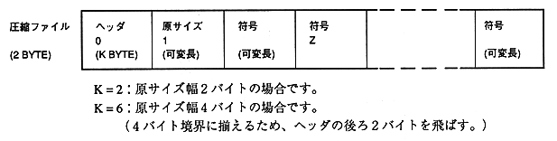
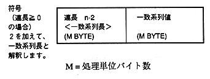
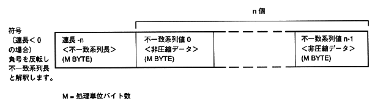
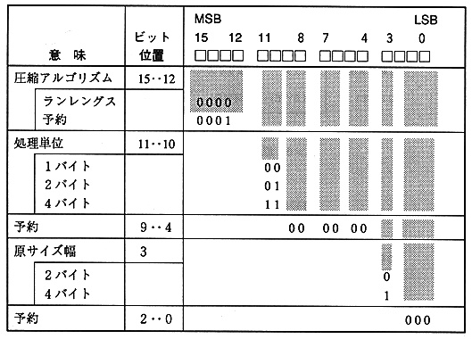
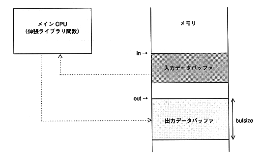
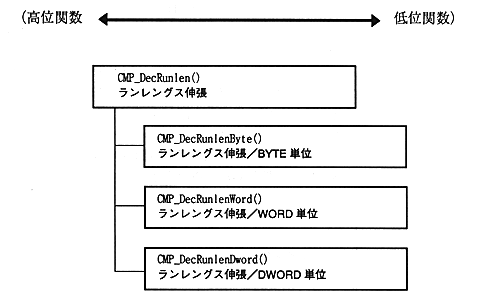

★PROGRAMMER'S GUIDE
★圧縮伸張ライブラリ
★PROGRAMMER'S GUIDE
★圧縮伸張ライブラリ





in ：入力バッファ先頭アドレス。４バイト境界に合わせること。 out ：出力バッファ先頭アドレス。４バイト境界に合わせること。 bufsize：出力バッファサイズ。処理単位バイト数の整数倍。
図1.5 モジュール構成

#include "cmplib.h"
/* 圧縮データランレングス法で圧縮し、
バイナリ・テキストコンバータで圧縮ファイルデータに変換 */
char comdata[] = {
0x10, 0x01, 0x04, ・・・・・・・・
:
:
:
}
/* 伸張データバッファ（圧縮前のサイズより小さくないサイズを確保する。） */
char outputbuf[4096];
:
:
:
−−−−−−−−−−−−−−−−−−−−−−−−−−−−−−−−−−−−−−−
main()
{
/* 伸張データポインタ */
char *buf;
/* 伸張データバッファの先頭に設定 */
bufp = outputbuf;
/* ランレングス辞書伸張 */
CMP_DecRunlen(cmpdata, &bufp, sizeof(outputbuf));
/* 伸張データの利用 */
:
:
:
}
#include "sega_gfs.h"
#include "cmplib.h"
/* ファイル読み込み用バッファ */
Uint8 readbuf[READ_SIZE]
/* 伸張データバッファ */
Uint8 outputbuf[4096]
−−−−−−−−−−−−−−−−−−−−−−−−−−−−−−−−−−−−−−−
main()
{
GfsFid fid; /* ファイルサイズ識別子 */
Sint32 fsize; /* ファイルサイズ */
char *bufp;
fid = 5; /* 圧縮データファイル識別子を指定 */
/* ファイルの一括読み込み */
fsize = GFS_Load(fid, 0, readbuf,READBUF_SIZE);
/* 伸張データバッファの先頭に設定 */
bufp = outputbuf;
/* ランレングス伸張 */
CMP_DecRanlen(readbuf, &bufp, sizeof(outoutbuf));
/* 伸張データの利用 */
:
:
:
}
★PROGRAMMER'S GUIDE
★圧縮伸張ライブラリ